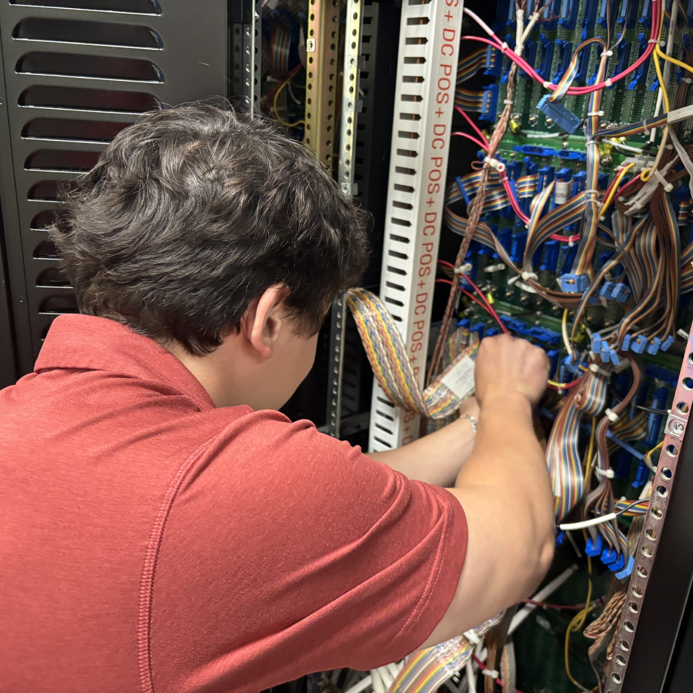
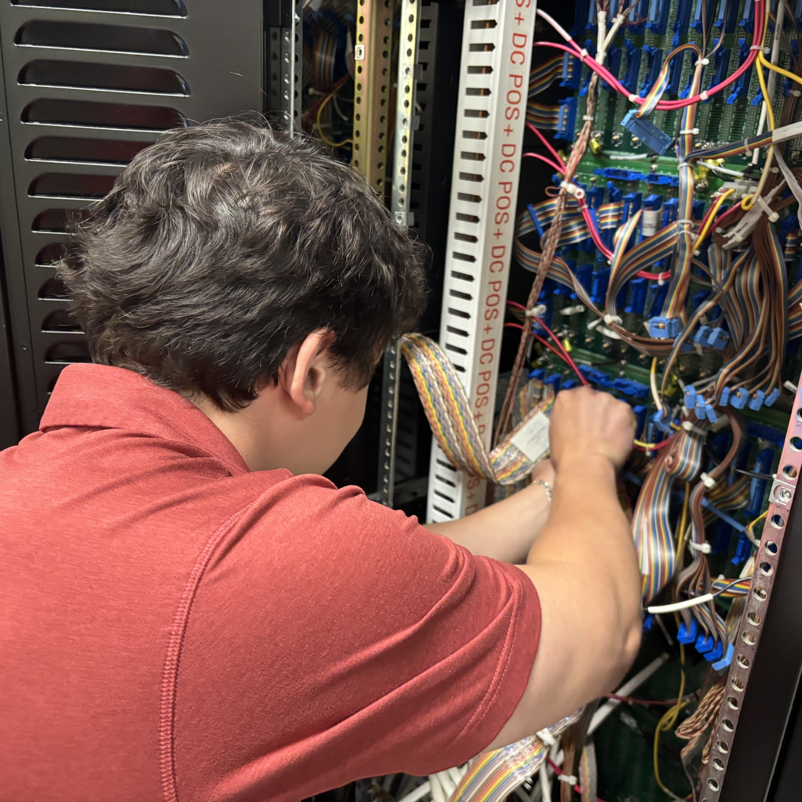

About Me
 

Hi! I’m Justin Schlag, a Computer Engineering student at the University of South Carolina Honors College. I hold a Secret security clearance, support undergraduate research under the Office of Naval Research, completed two internships with NIWC Atlantic, a Department of Defense naval facility, and worked as a network operator with USC’s Division of IT. I’m passionate about engineering solutions and open to new opportunities.
Learn MoreJust Ask JustinBot

Don’t want to scroll? Just ask JustinBot… He will answer any questions about Justin.
Try asking:
- “What kind of engineering work have you done?”
- “How did you build JustinBot?”
- "What do you like to do in your free time?"
Work Experience
Undergraduate Research Assistant — USC / ONR
ONR-funded computer vision work with Dr. Yan Tong: built SAM2 labeling tools and U-Net segmentation pipelines to advance raindrop removal in maritime environments.
Learn MoreNREIP Intern — NIWC Atlantic
Held a security clearance and contributed to Air Traffic Control engineering systems during Summer 2025.
Learn MoreNetwork Operator — USC Division of Information Technology
Cleared and processed enterprise switches (Aruba, Cisco, Juniper), managed RMA tracking, organized inventory, and performed AP diagnostics and cable fixes across campus.
Learn MoreSEAP Intern — NIWC Atlantic
Supported Foreign Military Sales (FMS) and mobile app development at NIWC Atlantic, contributing to projects that enhance military capabilities.
Learn MoreProjects
20 Questions
Play 20 Questions with JustinBot — let him guess your object or try to stump him.
Try ItJustinBot Chat Assistant
My AI assistant, built on OpenAI models and deployed via Render. Ask about my work, projects, or academics.
Learn More
CSCE 190 Website
From brainstorming and wireframing to interactive prototypes and production-ready builds.
Learn MoreSkills & Resume
Resume: View Here
Languages
- Java
- Python
- JavaScript
- HTML & CSS
AI & Research Tools
- YOLO Object Detection
- PyTorch
- SAM2
- OpenCV
- MATLAB
Hardware & Electronics
- Soldering & Wire Splicing
- Heat Shrinking
- Radio Tuning (CM300/350)
- Transceiver Work
- ETVS Rack Setup
- Wiring & Circuitry
System & Network Tools
- Unix/Linux Command Line
- Secure Device Configuration
- Basic Diagnostics (Switches, APs, Cabling)
- PuTTY & Terminal Networking
Software & Platforms
- VS Code
- Git & GitHub
- PuTTY
Networking Hardware
- Aruba Switches & APs
- Cisco Switches
- NetAlly Tools
- NetScout Devices